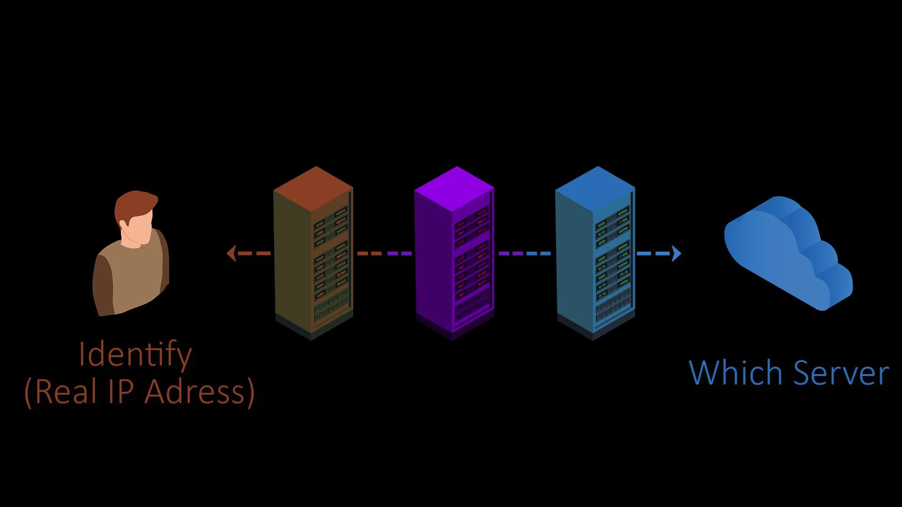

What Makes the Tor Network Secure?
In structure of used by TOR, only the first node knows the real identity of the user. The exit node only knows to which server it should forward the packet. Thus, the first node doesn't know to which exit node the packet is sent to, while the last node doesn't know from whom the packet. Since the task of the middle node is only to transfer between the first node and the exit node, it cannot know the sender of the packet and which web server the packet will reach. In this way, anonymous communication between the client and the server is provided.
You can see the situation more clearly by looking at this table.
Entry Node
Know: The real IP address of the user
Unknown: Which web server the package will eventually reach.
Middle Node
Know: Address of the entry and exit node
Unknown: From whom the packet came from (the user's real ip address) and to which web server the package will eventually reach.
Exit Node
Know: Which web server the package will eventually reach.
Unknown: From whom the packet came from (the user's real ip address)

However, the structure used by the Tor is not that perfect in the real world. Now let's talk about the weaknesses of the Tor network and the solutions to these weaknesses.